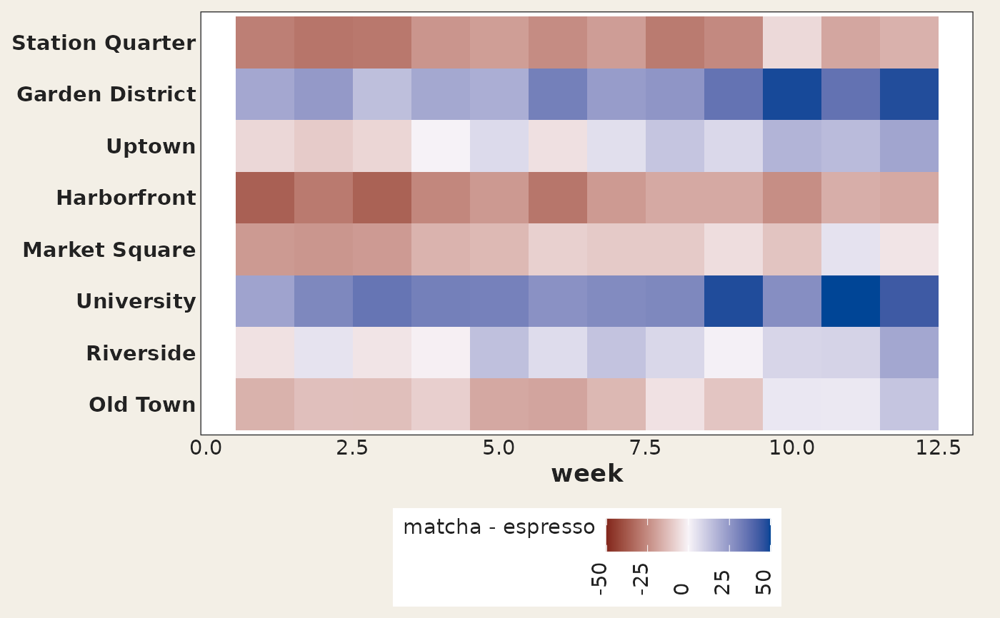
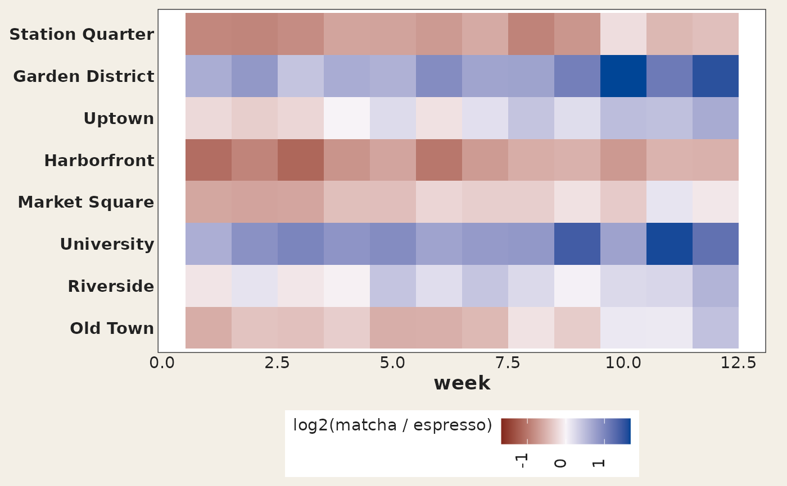

Sometimes the right chart for "how much bigger?" is not a glyph at all but
a diverging heatmap, and a package that offers one next to its signature
mark is more useful than one that insists on the mark. geom_taichi_diff()
computes one of taichi_summary()'s statistics per cell and draws it with
ggplot2::geom_tile() on a diverging scale centred on "the two sources
agree".
Usage
geom_taichi_diff(
yin,
yang,
method = c("difference", "ratio", "log_ratio", "z"),
palette = "diverging",
name = NULL,
midpoint = NULL,
symmetric = TRUE,
na.value = "grey90",
...
)Arguments
- yin, yang
Unquoted column names (or strings naming columns) for the two sources, as in
geom_taichi().- method
Which statistic to draw:
"difference"(yin - yang, the default),"ratio","log_ratio"or"z". Seetaichi_summary()for the definitions;"log_ratio"is the better choice than"ratio"whenever the two sources span orders of magnitude, because it is symmetric around agreement.- palette
The diverging colours: the name of a
taichi_palette()preset (the yang ramp's dark end becomes the low colour, the yin ramp's dark end the high colour, so the tile agrees with the glyph), a list withyinandyangelements, or a character vector of exactly three colours givinglow,midandhighdirectly.- name
Legend title. Defaults to a label naming the statistic and the two columns, e.g.
"matcha - espresso".- midpoint
The value that counts as "the sources agree" and is painted in the mid colour. Defaults to 1 for
"ratio"and 0 for every other method.- symmetric
If
TRUE(the default) the fill limits are made symmetric aboutmidpoint, so the mid colour really does sit at the centre of the legend and the two directions are coloured comparably. Set it toFALSEto use the plain data range.- na.value
Colour for cells whose statistic is missing — which includes every non-positive cell under
"ratio"and"log_ratio".- ...
Further arguments passed to
ggplot2::geom_tile(), for examplewidth,height,colourorlinewidth.
Value
An object that, added to a ggplot2::ggplot() with +, draws the
difference tiles and their diverging fill scale. It is not a plot on its
own.
Details
It is the explicit-encoding companion to geom_taichi(): same data, same
grid, same statistics, but the relationship itself is on the page instead
of being left to the reader's eye. Use it beside a taichi grid, not instead
of one — the glyph shows the levels, this shows the gap.
See also
taichi_summary() for the same numbers as a table, and
geom_taichi()'s explicit argument for the in-glyph version.
Examples
library(ggplot2)
ggplot(cafes_tg, aes(week, neighbourhood)) +
geom_taichi_diff(yin = matcha, yang = espresso) +
theme_taichi()

# log ratio, symmetric about "the two agree"
ggplot(cafes_tg, aes(week, neighbourhood)) +
geom_taichi_diff(yin = matcha, yang = espresso, method = "log_ratio") +
theme_taichi()
